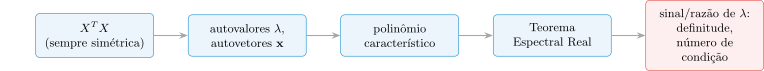
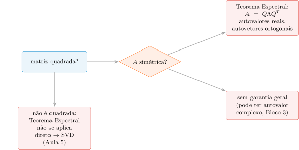

Aula 4: Autovalores, Autovetores e Matrizes Simétricas
Álgebra Linear e Otimização para Aprendizado de Máquina
Prof. Marcos Medeiros Raimundo
2026-09-07
Revisão e Introdução
Revisão Rápida
Aula 3: projeção \(\hat{\mathbf{y}}\) (a “sombra”) \(\equiv\) resíduo ortogonal a \(\text{col}(X)\) \(\Rightarrow\) Equações Normais \(X^TX\hat{\mathbf{w}}=X^T\mathbf{y}\) \(\Rightarrow\), sob posto completo, \(\hat{\mathbf{w}}=(X^TX)^{-1}X^T\mathbf{y}\).
Bloco 6 da Aula 3: AveRooms/AveBedrms (quase-colinear) oscila \(\approx 29{,}5\%\) sob perturbação de \(1\%\); MedInc/HouseAge (bem-condicionado) oscila só \(\approx 0{,}1\%\) — quase \(300\times\) mais sensível.
O que essa perturbação faz: soma-se a MedHouseVal um ruído gaussiano de desvio-padrão igual a \(1\%\) do desvio-padrão da própria variável, reajusta-se por mínimos quadrados. O que ela mede: a taxa de amplificação entre uma mudança pequena na entrada e a oscilação resultante no peso estimado.
Essa fragilidade foi medida (perturbar e observar), não explicada. \(\text{cond}(X^TX)\approx 23\,460\) (completo), \(\approx
420\) (quase-colinear), \(\approx 169\) (bem-condicionado) — via np.linalg.cond, sem saber ainda de onde vêm esses números.
O que a perturbação revela sobre \(X^TX\)
O experimento de perturbação mede, por fora, uma taxa de amplificação: entrada perturbada pouco \(\to\) saída (\(\hat{\mathbf{w}}\)) oscila muito ou pouco. Essa taxa não depende do ruído usado — é uma propriedade fixa da matriz \(X^TX\).
Em vez de sacudir \(X^TX\) de fora, abrir a matriz por dentro: os autovalores já determinam essa taxa de amplificação de forma exata, sem perturbar nada.
Ideia central: a maioria das direções gira e muda de tamanho sob uma transformação \(A\); direções especiais só mudam de tamanho, nunca de direção.
Roteiro da Aula
1. O que é, geometricamente, um autovalor e um autovetor?
2. Como calcular à mão, via o polinômio característico?
3. Por que toda matriz simétrica (\(X^TX\), sempre) tem autovalores reais e autovetores ortogonais — o Teorema Espectral Real?
4. Como sinal e razão dos autovalores definem definitude positiva e o número de condição exato — fechando o ciclo da Aula 3?
Problema Motivador
Mesmos dois pares da Aula 3: AveRooms/AveBedrms (quase-colinear, \(r=0{,}865\)) vs. MedInc/HouseAge (bem-condicionado). A Aula 3 só soube qual era mais frágil depois de perturbar.
Existe alguma propriedade de \(X^TX\) — calculável sem perturbar nada — que já antecipe qual par vai se comportar mal?

Pergunta
Mesma correlação implica mesmo número de condição de \(X^TX\)?
Dica: pense se a escala dos atributos (não só a correlação) poderia influenciar o número de condição.
- □ Mesma correlação de Pearson \(\Rightarrow\) mesmo número de condição de \(X^TX\) — as duas quantidades medem a mesma coisa.
- □ Correlação zero (ortogonalidade) não garante, por si só, número de condição igual a \(1\) — a escala relativa das colunas também importa.
- □ Risco de crédito (German Credit) com duração do empréstimo e valor do crédito correlacionados: mesmo tipo de fragilidade numérica se aplica.
- □ Como a Aula 3 só perturbou os dados para medir, não existe forma de calcular o número de condição sem perturbação real.
Resposta
Correlação e número de condição — Resposta
- ✗ Correlação mede alinhamento angular entre colunas; número de condição de \(X^TX\) mistura esse alinhamento com a escala/variância de cada coluna — duas quantidades relacionadas, não idênticas.
- ✔ Ortogonalidade (correlação \(0\)) só garante \(X^TX\) diagonal; se as variâncias das duas colunas forem muito diferentes, o número de condição ainda pode ser grande.
- ✔ Mesma mecânica (colunas quase-redundantes \(\Rightarrow\) \(X^TX\) mal-condicionada), outro dataset e outra tarefa de ML.
- ✗ É exatamente o que esta aula resolve: calcular o número de condição direto da estrutura de \(X^TX\) (autovalores), sem perturbar nada.
Voltando à pergunta: não — correlação e escala são, em geral, independentes, e o número de condição de \(X^TX\) depende dos dois. O Bloco 6 vai calcular os autovalores exatos e confirmar isso nos mesmos dois pares.
Intuição – Autovetores
Uma Matriz Agindo sobre um Conjunto de Direções
Antes de qualquer fórmula, uma imagem concreta. Matriz \(A=\begin{bmatrix}4&2\\1&3\end{bmatrix}\) (MathML, Exemplo 4.5, reaproveitada no Bloco 3) como transformação linear \(\mathbf{v}\mapsto A\mathbf{v}\) agindo sobre todo o plano \(\mathbb{R}^2\).
Escolha um punhado de vetores unitários apontando em direções diferentes ao redor da origem, e observe o que \(A\) faz com cada um deles.
O Que os Dois Painéis Mostram
Esquerda: seta cinza = vetor original; seta azul = imagem \(A\mathbf{v}\). A maioria gira. Duas retas tracejadas (laranja/vermelha): sobre elas, \(A\mathbf{v}\) fica na mesma reta — só o comprimento muda (aqui, sempre esticando, nunca invertendo o sentido, porque os dois fatores de escala são positivos — isso muda quando um autovalor é negativo, Pergunta a seguir).
Direita: círculo unitário (pontilhado) \(\to\) elipse (azul) sob \(A\). Os eixos da elipse caem exatamente sobre as duas direções especiais — cada eixo esticado por um fator diferente (\(\lambda=2\) e \(\lambda=5\), calculados à mão no Bloco 3).
Nomeando a Intuição
Direções especiais = autovetores de \(A\); fatores de escala associados = autovalores correspondentes. É isso que o desenho já mostrava — só faltava o nome.
Observação plantada: meça o ângulo entre as duas retas tracejadas — não são perpendiculares (\(90°\)). Repare: simetria é propriedade da matriz (\(A=A^T\) ou não); ortogonalidade é propriedade dos autovetores (perpendiculares entre si, ou não) — são duas coisas diferentes, ligadas por um teorema, não sinônimos.
Aqui, \(A=\begin{bmatrix}4&2\\1&3\end{bmatrix}\) não é simétrica (\(A\ne A^T\): a entrada \((1,2)=2\) é diferente da entrada \((2,1)=1\)) — e os autovetores, de fato, não são ortogonais. Bloco 4 prova que essa ligação não é coincidência: se a matriz for simétrica, os autovetores são sempre ortogonais entre si, garantido. É o gancho direto para lá.
A Equação Formal
Definição 4.6 (MathML, tradução nossa): \(\lambda\in\mathbb{R}\) é autovalor de \(A\in\mathbb{R}^{n\times n}\) e \(\mathbf{x}\in\mathbb{R}^n\setminus\{\mathbf{0}\}\) é o autovetor correspondente se \[A\mathbf{x} = \lambda\mathbf{x}\] (a equação de autovalor) — exatamente “esticar sem girar” do desenho acima: nenhuma rotação, só escala.
Caso que não aparece no desenho, mas conta: se \(\lambda<0\), a escala inverte o sentido do vetor (\(\mathbf{x}\) e \(A\mathbf{x}\) apontam para lados opostos da mesma reta) — ainda “sem girar” no sentido da equação (a reta é a mesma), só que com sentido trocado. No exemplo desta figura os dois autovalores são positivos (\(\lambda=2,5\)), por isso nenhuma seta se inverte.
Não-unicidade (MathML): se \(\mathbf{x}\) é autovetor de autovalor \(\lambda\), qualquer \(c\mathbf{x}\) (\(c\ne 0\)) também é, com o mesmo autovalor — não é só uma afirmação, sai direto da equação: \[A(c\mathbf{x}) = cA\mathbf{x} = c\lambda\mathbf{x} = \lambda(c\mathbf{x}).\]
Logo, “direção especial” é uma reta inteira de autovetores, não um vetor específico. Por isso um autovetor é melhor pensado como uma direção, não como “o” vetor: um vetor de verdade carrega direção e amplitude, mas aqui a amplitude é arbitrária — só a direção pertence a \(A\).
Pergunta
\(A\mathbf{v}=-3\mathbf{v}\) significa que \(\mathbf{v}\) não é autovetor, já que a direção inverteu?
Dica: a equação de autovalor permite \(\lambda\) negativo? “Mesma reta, sentido oposto” ainda conta como “não girar”?
- □ \(A\mathbf{v}=-3\mathbf{v}\) (\(\mathbf{v}\ne\mathbf{0}\)) significa que \(\mathbf{v}\) não é autovetor, pela inversão de direção.
- □ Se todo vetor do plano fosse autovetor de \(A\), isso forçaria \(A=cI\) (múltiplo escalar da identidade).
- □ Camada linear de rede neural, matriz de pesos \(W\): se \(W\mathbf{v}=-3\mathbf{v}\), \(\mathbf{v}\) é autovetor de \(W\) com autovalor negativo, direção preservada.
- □ Autovetor não-único (múltiplo escalar) \(\Rightarrow\) autoespaço sempre tem dimensão \(>1\).
Resposta
Sinal do autovalor e o que “não girar” realmente exige — Resposta
- ✗ \(\lambda=-3\) é um autovalor válido (é real); “mesma reta, sentido oposto” continua sendo “não girar” no sentido da equação — a direção (a reta) é preservada, só o sentido e o comprimento mudam.
- ✔ Se toda direção é preservada, em particular os vetores canônicos \(\mathbf{e}_1,\mathbf{e}_2\) são autovetores, o que força \(A\) diagonal; e se toda direção compartilha o mesmo comportamento de escala, a única matriz consistente é \(A=cI\).
- ✔ Aplicação direta e correta da mesma equação de autovalor à matriz de pesos de uma rede neural — mesma matemática, outro domínio de ML.
- ✗ Não-unicidade do autovetor (múltiplos escalares) não implica dimensão \(>1\) do autoespaço — é o contrário do que Bloco 3 vai mostrar para \(A_{\text{exemplo}}\): cada autoespaço aqui tem dimensão \(1\) (uma reta), mesmo contendo infinitos vetores (a reta menos a origem).
Voltando à pergunta: não — o sinal de \(\lambda\) decide se a direção é preservada com o mesmo sentido (\(\lambda>0\)) ou invertida (\(\lambda<0\)), mas em ambos os casos \(\mathbf{v}\) continua autovetor. O que de fato desqualificaria \(\mathbf{v}\) seria \(A\mathbf{v}\) apontar para uma direção diferente da reta de \(\mathbf{v}\).
O Polinômio Característico
Premissas: O Que Precisamos Resolver
Nota
Premissas
- Matriz quadrada \(A\in\mathbb{R}^{n\times n}\) fixa (\(n=2\) no exemplo).
- Procuramos \((\lambda,\mathbf{x})\), \(\mathbf{x}\ne\mathbf{0}\), com \(A\mathbf{x}=\lambda\mathbf{x}\).
- Não sabemos quantos existem — só que pelo menos dois existem neste exemplo (Bloco 2).
Objetivo: transformar \(A\mathbf{x}=\lambda\mathbf{x}\) num problema de álgebra resolvível passo a passo, sem depender de desenho.
Passo (i): Reescrevendo Como um Sistema Homogêneo
\[A\mathbf{x} = \lambda\mathbf{x} \iff (A-\lambda I)\mathbf{x} = \mathbf{0}\] Sistema linear homogêneo \(B\mathbf{x}=\mathbf{0}\), \(B=A-\lambda I\) — mas \(\lambda\) também é incógnita, embutida em \(B\).
Premissa 2 exige \(\mathbf{x}\ne\mathbf{0}\) (não iremos usar solução trivial \(\mathbf{x}=\mathbf{0}\)).
Com isso temos que \(B\mathbf{x}=\mathbf{0}\) tem solução não-trivial \(\iff\) \(B\) é singular (não-invertível). Então precisamos de \(\det(B)=0\) para que haja autovetor não-trivial.
Essa equação só tem \(\lambda\) como incógnita (\(\mathbf{x}\) já eliminado) — resolvível por conta própria.
Definição 4.5 - O Polinômio Característico (MathML): \[p_A(\lambda) := \det(A-\lambda I) = c_0+c_1\lambda+\cdots+(-1)^n\lambda^n\] é o polinômio característico de \(A\).
Teorema 4.8 (MathML, tradução nossa): \(\lambda\in\mathbb{R}\) é autovalor de \(A\) \(\iff\) \(\lambda\) é raiz de \(p_A(\lambda)\).
Autovalores de \(A\) = raízes reais de um único polinômio — para \(2\times 2\), literalmente resolver uma equação do 2º grau.
Passo (ii): O Polinômio do Exemplo
\(A=\begin{bmatrix}4&2\\1&3\end{bmatrix}\) (Bloco 2, MathML Ex. 4.5): \[A-\lambda I = \begin{bmatrix}4-\lambda & 2\\ 1 & 3-\lambda\end{bmatrix}\] \[p_A(\lambda) = (4-\lambda)(3-\lambda)-2\cdot 1 = \lambda^2-7\lambda+10\]
MathML (tradução nossa): fatorando, \(p(\lambda)=(2-\lambda)(5-\lambda)\) \(\Rightarrow\) raízes \(\lambda_1=2\), \(\lambda_2=5\).
Confirmando por Bhaskara: \[ \lambda=\frac{7\pm\sqrt{49-40}}{2}=\frac{7\pm\sqrt{9}}{2}=\frac{7\pm 3}{2} \] \(\lambda\in\{2,5\}\) — exatamente os eixos da elipse do Bloco 2.
Passo (iii): Achando os Autovetores
Para \(\lambda_2=5\): \(A-5I=\begin{bmatrix}-1&2\\1&-2\end{bmatrix}\) \(\Rightarrow\) \(-x_1+2x_2=0 \Rightarrow x_1=2x_2\).
Variável livre \(x_2=t\) \(\Rightarrow\) \((x_1,x_2)=(2t,t)=t\cdot(2,1)\) — por definição, o conjunto de todos os múltiplos escalares de \((2,1)\): \[E_5=\text{span}((2,1)) := \{t\cdot(2,1) : t\in\mathbb{R}\}\] (MathML).
Para \(\lambda_1=2\): \(A-2I=\begin{bmatrix}2&2\\1&1\end{bmatrix}\) \(\Rightarrow\) \(x_1+x_2=0 \Rightarrow x_1=-x_2\).
Parametrizando \(x_2=t\): \((x_1,x_2)=t\cdot(-1,1)\), mesma reta que \(\text{span}((1,-1))\) (sinal do parâmetro só relabeia os pontos) \(\Rightarrow\) \(E_2=\text{span}((1,-1))\).
\((2,1)\) e \((1,-1)\): exatamente as duas direções (laranja/vermelha) do Bloco 2 — o cálculo confirma, número por número, o desenho.
Verificação Numérica
À mão é indispensável para entender a origem; mas para matrizes maiores (ex.: \(X^TX\in\mathbb{R}^{4\times 4}\) do Bloco 6), o polinômio característico vira inviável (grau \(\ge 5\) nem sempre tem raiz fechada). numpy.linalg.eig resolve numericamente:
autovalores, autovetores = np.linalg.eig(A_exemplo)
# Autovalores reais (2 e 5); numpy.linalg.eig devolve dtype complexo por
# padrão para matrizes não-simétricas — parte imaginária é zero aqui.
autovalores = autovalores.real
autovetores = autovetores.real
print("Autovalores:", autovalores)
print("Autovetores (colunas, normalizados por numpy):")
print(autovetores)
# Conferindo A x = lambda x diretamente, para cada par
for k in range(2):
lhs = A_exemplo @ autovetores[:, k]
rhs = autovalores[k] * autovetores[:, k]
print(f" lambda={autovalores[k]:.1f}: ||A x - lambda x|| = {np.linalg.norm(lhs - rhs):.2e}")Autovalores: [5. 2.]
Autovetores (colunas, normalizados por numpy):
[[ 0.89442719 -0.70710678]
[ 0.4472136 0.70710678]]
lambda=5.0: ||A x - lambda x|| = 0.00e+00
lambda=2.0: ||A x - lambda x|| = 3.14e-16O Que a Verificação Confirma
Autovalores batem exatamente com \(\{2,5\}\); \(A\mathbf{x}=\lambda\mathbf{x}\) confirmado até erro de arredondamento.
numpy sempre normaliza autovetores (norma \(1\)) — só mais uma escolha dentro da reta de múltiplos escalares válidos, não contradição com \((2,1)\)/\((1,-1)\) calculado à mão.
Pergunta
Polinômio de grau 3 com só uma raiz real: quantos autovalores reais?
Dica: autovalor = raiz real do polinômio característico (Teorema 4.8) — raízes complexas contam?
- □ Grau 3, só uma raiz real: exatamente um autovalor real — as outras duas (complexas) não correspondem a autovalor real.
- □ Se o polinômio característico \(2\times 2\) não tivesse raiz real (discriminante negativo), a matriz não teria autovalor real, mas ainda seria transformação linear válida (ex.: rotação pura).
- □ Cadeia de Markov de aprendizado por reforço (\(2\times 2\)): achar autovalores por polinômio característico é aplicação válida, fora da geometria.
- □ Autovetor não-único \(\Rightarrow\) ao resolver \((A-\lambda I)\mathbf{x}=\mathbf{0}\), sempre há mais de uma equação linearmente independente restringindo \(\mathbf{x}\).
Resposta
Raízes reais vs. complexas, e o autoespaço — Resposta
- ✔ Exatamente a leitura correta do Teorema 4.8: só raízes reais do polinômio característico contam como autovalor (real) da matriz.
- ✔ Rotação pura por ângulo \(\ne 0°,180°\) não tem direção que só estique/encolha (toda direção gira) — consistente com polinômio característico sem raiz real.
- ✔ Mesma técnica algébrica, aplicada fora de contexto geométrico, a uma matriz de transição de aprendizado por reforço.
- ✗ É o oposto do exemplo desta aula: \(A-\lambda I\) deu uma equação independente por autovalor (\(x_1=2x_2\) e \(x_1=-x_2\)), não várias — o autoespaço de \(A_{\text{exemplo}}\) tem dimensão \(1\) em cada caso, apesar da não-unicidade do autovetor dentro dessa reta.
Voltando à pergunta: só raízes reais do polinômio característico contam. Uma matriz \(n\times n\) real pode ter menos de \(n\) autovalores reais — o caso extremo é a rotação pura, sem nenhum.
O Teorema Espectral Real para Matrizes Simétricas
Por Que Isso Importa Para \(X^TX\)
\(X^TX\) é sempre simétrica, para qualquer \(X\) (mesmo retangular): \((X^TX)^T = X^T(X^T)^T = X^TX\) — uma linha de álgebra (regra \((AB)^T=B^TA^T\), depois \((X^T)^T=X\)).
Teorema 4.14 (MathML, tradução nossa): para qualquer \(A\in\mathbb{R}^{m\times n}\), \(S:=A^TA\) é sempre simétrica, semidefinida positiva; se \(\text{rk}(A)=n\), \(S\) é definida positiva.
Só uma das duas condições depende do posto: “semidefinida positiva” vale sempre, mesmo \(A\) singular ou retangular; só “definida positiva” exige \(\text{rk}(A)=n\) (definição formal a seguir). Logo \(X^TX\) é sempre semidefinida positiva — e só é definida positiva sob posto completo.
Este bloco prova o que a simetria de \(X^TX\) garante sobre seus autovalores/autovetores — peça que falta para o Bloco 5 fechar o ciclo da Aula 3.
Definição: Matrizes Definidas e Semidefinidas Positivas
Definição 3.4 (MathML, tradução nossa): \(A\) simétrica (\(A=A^T\)) é definida positiva se \(\mathbf{x}^TA\mathbf{x}>0\) para todo \(\mathbf{x}\ne\mathbf{0}\); é semidefinida positiva se vale apenas \(\mathbf{x}^TA\mathbf{x}\ge 0\) para todo \(\mathbf{x}\ne\mathbf{0}\).
Simetria é hipótese, não conclusão — sem \(A=A^T\) a definição nem se aplica. “Definida” vs. “semidefinida”: desigualdade estrita (\(>0\)) vs. fraca (\(\ge 0\)), testada para todo \(\mathbf{x}\ne\mathbf{0}\).
Teorema: \(A^TA\) é Simétrica e Semidefinida Positiva
Nota
Teorema (MathML 4.14): para qualquer \(A\in\mathbb{R}^{m\times n}\), \(S:=A^TA\) é simétrica e satisfaz \(\mathbf{x}^TS\mathbf{x}\ge 0\) para todo \(\mathbf{x}\in\mathbb{R}^n\).
Prova (simetria). \(S:=A^TA \Rightarrow\) \[S^T=(A^TA)^T=A^T(A^T)^T=A^TA=S\] (regra \((BC)^T=C^TB^T\), depois \((A^T)^T=A\)). \(\blacksquare\)
Prova (semidefinitude positiva). Para todo \(\mathbf{x}\in\mathbb{R}^n\): \[\mathbf{x}^TS\mathbf{x} = \mathbf{x}^T(A^TA)\mathbf{x} = (\mathbf{x}^TA^T)(A\mathbf{x}) = (A\mathbf{x})^T(A\mathbf{x}) = \|A\mathbf{x}\|^2 \ge 0\] usando \(\mathbf{x}^TA^T=(A\mathbf{x})^T\) (mesma regra de transposta). \(\blacksquare\)
Com \(A=X\): prova completa (não só citação) de por que \(X^TX\) é sempre simétrica e semidefinida positiva — com ou sem posto completo, nenhuma das duas provas usa essa hipótese.
Premissas e Prova: Ortogonalidade
Premissas
- \(A\in\mathbb{R}^{n\times n}\) simétrica (\(A=A^T\)).
- \(\mathbf{x}_1,\mathbf{x}_2\) autovetores de autovalores distintos \(\lambda_1\ne\lambda_2\).
Prova. Calculamos o escalar \(\mathbf{x}_1^TA\mathbf{x}_2\) de duas formas diferentes.
Primeiro, aplicando \(A\) diretamente a \(\mathbf{x}_2\) (Premissa 2): \[\mathbf{x}_1^TA\mathbf{x}_2 = \mathbf{x}_1^T(\lambda_2\mathbf{x}_2) = \lambda_2\,(\mathbf{x}_1^T\mathbf{x}_2)\]
Segundo, usando que é um escalar \(1\times 1\) (igual à própria transposta) e que \(A\) é simétrica (Premissa 1): \[\mathbf{x}_1^TA\mathbf{x}_2 = (\mathbf{x}_1^TA\mathbf{x}_2)^T = \mathbf{x}_2^TA^T\mathbf{x}_1 = \mathbf{x}_2^TA\mathbf{x}_1 = \lambda_1\,(\mathbf{x}_2^T\mathbf{x}_1)\]
Como \(\mathbf{x}_1^T\mathbf{x}_2=\mathbf{x}_2^T\mathbf{x}_1\) (produto interno é simétrico), os dois caminhos calculam o mesmo escalar por rotas diferentes, logo \[\lambda_2\,(\mathbf{x}_1^T\mathbf{x}_2) = \lambda_1\,(\mathbf{x}_1^T\mathbf{x}_2) \;\Longrightarrow\; (\lambda_2-\lambda_1)\,(\mathbf{x}_1^T\mathbf{x}_2) = 0.\]
Pela Premissa 2, \(\lambda_2-\lambda_1\ne 0\); o único jeito de o produto ser zero é \(\mathbf{x}_1^T\mathbf{x}_2=0\) — autovetores de autovalores distintos de uma matriz simétrica são automaticamente ortogonais. \(\blacksquare\)
O Teorema Espectral Real
Garante mais que a prova de ortogonalidade: autovalores de matriz simétrica são sempre reais, e existe uma base ortonormal inteira de autovetores (mesmo com autovalores repetidos — Gram-Schmidt, MathML Exemplo 4.8, não aprofundado aqui).
Nota
Teorema 4.15 (MathML, tradução nossa): \(A\) simétrica \(\Rightarrow\) existe base ortonormal de \(V\) de autovetores de \(A\), cada autovalor real.
Nota
Teorema (Boyd, Apêndice A.5.2, tradução nossa): \(A\in\mathcal{S}^n\) simétrica \(\Rightarrow\) \(A=Q\Lambda Q^T\), \(Q\) ortogonal (\(Q^TQ=I\)), \(\Lambda=\text{diag}(\lambda_1,\dots,\lambda_n)\) — a decomposição espectral de \(A\).
Os dois dizem a mesma coisa: MathML fala em “base de \(V\)”, Boyd em “colunas de \(Q\)” — a ponte é \(Q=[\mathbf{x}_1\;\cdots\;\mathbf{x}_n]\).
Contraste Direto: Matriz Simétrica
\(A_{\text{sim}}=\frac12\begin{bmatrix}5&-2\\-2&5\end{bmatrix}\) (MathML, Exemplo 4.11) — diferente do Bloco 2/3, \(A_{\text{sim}}=A_{\text{sim}}^T\).
MathML (tradução nossa): \(\lambda_1=7/2\), \(\lambda_2=3/2\), \(\mathbf{p}_1=\frac{1}{\sqrt2}(1,-1)\), \(\mathbf{p}_2=\frac{1}{\sqrt2}(1,1)\).
autovalores_sim, autovetores_sim = np.linalg.eigh(A_sim)
print("Autovalores de A_sim:", autovalores_sim)
print("Autovetores de A_sim (colunas):")
print(autovetores_sim)
def angulo_entre(u, v):
cos_ang = np.clip((u @ v) / (np.linalg.norm(u) * np.linalg.norm(v)), -1, 1)
return np.degrees(np.arccos(cos_ang))
ang_sim = angulo_entre(autovetores_sim[:, 0], autovetores_sim[:, 1])
ang_nao_sim = angulo_entre(autovetores_ex[:, 0], autovetores_ex[:, 1])
print(f"\nÂngulo entre autovetores de A_sim (simétrica): {ang_sim:.2f} graus")
print(f"Ângulo entre autovetores de A_exemplo (não-simétrica): {ang_nao_sim:.2f} graus")
print(f"\nA_sim é simétrica? {np.allclose(A_sim, A_sim.T)}")
print(f"A_exemplo é simétrica? {np.allclose(A_exemplo, A_exemplo.T)}")Autovalores de A_sim: [1.5 3.5]
Autovetores de A_sim (colunas):
[[-0.70710678 -0.70710678]
[-0.70710678 0.70710678]]
Ângulo entre autovetores de A_sim (simétrica): 90.00 graus
Ângulo entre autovetores de A_exemplo (não-simétrica): 108.43 graus
A_sim é simétrica? True
A_exemplo é simétrica? FalseO Que os Números Confirmam
Autovalores \(3{,}5\) e \(1{,}5\): conferem com o MathML. Ângulo entre autovetores de \(A_{\text{sim}}\): \(90°\) — ortogonais, como a prova garantiu.
Ângulo entre autovetores de \(A_{\text{exemplo}}\) (não-simétrica, Blocos 2-3): visivelmente diferente de \(90°\). Não é coincidência de arredondamento — é a diferença exata entre “simétrica” e “qualquer”.
np.linalg.eigh (não eig): rotina especializada em matrizes simétricas — mais precisa/rápida, ordena autovalores crescente; não aplicável a \(A_{\text{exemplo}}\) (não-simétrica).

Decomposição Espectral: Caso Geral e Caso Simétrico
Nota
Teorema 4.20 (MathML, tradução nossa): \(A\in\mathbb{R}^{n\times n}\) \(=PDP^{-1}\) (\(D\) diagonal de autovalores) \(\iff\) autovetores de \(A\) formam base de \(\mathbb{R}^n\) — \(P\) só invertível, não necessariamente ortogonal.
Nota
Teorema 4.21 (MathML, tradução nossa): \(S\) simétrica \(\Rightarrow\) sempre diagonalizável, com BON de autovetores de \(\mathbb{R}^n\); logo \(P\) (colunas = essa base) é ortogonal, \(D=P^TAP\).
Trocando \(P\to Q\) (convenção Boyd) e isolando: \(A=QDQ^T\) — mesma equação do Boyd, \(\Lambda=D\). Decomposição espectral = caso especial sempre diagonalizável, com mudança de base ortogonal.
Pergunta
Autovalor repetido \(\Rightarrow\) autovetores nunca ortogonais entre si?
Dica: caso mais extremo de repetição — todos os \(n\) autovalores de \(A\) iguais. Quantos autovetores independentes isso deixa?
- □ Prova só cobre autovalores distintos \(\Rightarrow\) autovetores do mesmo autovalor repetido nunca podem ser escolhidos ortogonais.
- □ Se \(A\) simétrica tivesse todos os autovalores iguais (ex.: \(A=3I\)), qualquer base ortonormal de \(\mathbb{R}^n\) serviria como autovetores ortogonais de \(A\).
- □ Matriz de covariância de atributos de ML (ex.: Breast Cancer Wisconsin): dois autovalores iguais \(\Rightarrow\) eixos de PCA correspondentes não são unicamente determinados.
- □ Se a prova cobrisse autovalores repetidos direto, a conclusão do Teorema 4.21 mudaria: matriz com autovalor repetido deixaria de ser diagonalizável ortogonalmente.
Resposta
Autovalores repetidos não quebram a ortogonalidade — Resposta
- ✗ É o oposto: autovetores do mesmo autoespaço podem sempre ser escolhidos ortogonais entre si via Gram-Schmidt (MathML Exemplo 4.8) — a prova deste bloco só não é necessária nesse caso porque a ortogonalidade não vem “de graça”, precisa ser imposta.
- ✔ \(A=3I\): \(A\mathbf{v}=3\mathbf{v}\) para todo \(\mathbf{v}\) — o autoespaço único ocupa o espaço inteiro, e qualquer base ortonormal de \(\mathbb{R}^n\) é, em particular, uma escolha válida de autovetores.
- ✔ Aplicação direta e correta do Teorema 4.21 à matriz de covariância de qualquer dataset — a mesma degenerescência de autovalores iguais que aparece em \(A=3I\) aparece em PCA sempre que duas direções têm exatamente a mesma variância.
- ✗ A conclusão do Teorema 4.21 (diagonalização ortogonal sempre existe) não depende de os autovalores serem distintos — é verdadeira para toda matriz simétrica; o que muda com autovalores repetidos é só a demonstração (precisa de Gram-Schmidt dentro do autoespaço), não o resultado.
Voltando à pergunta: não — autovalor repetido nunca impede ortogonalidade, só a torna uma escolha a mais (via Gram-Schmidt) em vez de uma consequência automática.
Definitude Positiva: o Sinal dos Autovalores
Retomando a Forma Quadrática da Aula 1
Definição 3.4 (MathML, tradução nossa): \(A\) simétrica é definida positiva se \(\mathbf{x}^TA\mathbf{x}>0\) para todo \(\mathbf{x}\ne\mathbf{0}\); semidefinida positiva se vale só \(\ge 0\).
Exemplo 3.4 (MathML, tradução nossa): \(A_1=\begin{bmatrix}9&6\\6&5\end{bmatrix}\): \(\mathbf{x}^TA_1\mathbf{x} = (3x_1+2x_2)^2+x_2^2>0\) sempre — definida positiva.
\(A_2=\begin{bmatrix}9&6\\6&3\end{bmatrix}\): \(\mathbf{x}^TA_2\mathbf{x} = (3x_1+2x_2)^2-x_2^2\), negativo p.ex. em \(\mathbf{x}=(2,-3)\) — não definida positiva.
A Ponte: Definitude Via o Sinal dos Autovalores
Testar \(\mathbf{x}^TA\mathbf{x}>0\) para todo \(\mathbf{x}\) parece infinito. Teorema Espectral (\(A=Q\Lambda Q^T\)): decompor \(\mathbf{x}\) na base de \(Q\) vira a forma quadrática numa soma ponderada pelos autovalores.
Boyd, Apêndice A.5.2 (tradução nossa): \(A\succ 0 \iff\) todos os autovalores positivos, \(\lambda_{\min}(A)>0\).
Verificando em \(A_1\)/\(A_2\) do MathML:
A1 = np.array([[9.0, 6.0], [6.0, 5.0]])
A2 = np.array([[9.0, 6.0], [6.0, 3.0]])
autoval_A1 = np.linalg.eigh(A1)[0]
autoval_A2 = np.linalg.eigh(A2)[0]
print("Autovalores de A1:", autoval_A1, "-> definida positiva?", np.all(autoval_A1 > 0))
print("Autovalores de A2:", autoval_A2, "-> definida positiva?", np.all(autoval_A2 > 0))Autovalores de A1: [ 0.67544468 13.32455532] -> definida positiva? True
Autovalores de A2: [-0.70820393 12.70820393] -> definida positiva? FalseO Que os Autovalores Confirmam
\(A_1\): os dois autovalores positivos — definida positiva, sem testar infinitos \(\mathbf{x}\).
\(A_2\): um autovalor negativo — mesma informação do contraexemplo \(\mathbf{x}=(2,-3)\), visível de antemão.
Intuição Geométrica: o Formato da Tigela
\(f(\mathbf{x})=\mathbf{x}^TA\mathbf{x}\) como superfície: \(A\) definida positiva \(\Rightarrow\) formato de tigela (mínimo único na origem, sobe em toda direção).
\(A\) indefinida (caso \(A_2\)): formato de sela — sobe em algumas direções, desce em outras, consistente com o sinal trocando.

O Quociente de Rayleigh
Falta isolar \(\lambda_{\max}\)/\(\lambda_{\min}\) direto da forma quadrática, sem calcular todos os autovalores.
Boyd, Apêndice A.5.2 (tradução nossa): \[\lambda_{\min}(A)\,\mathbf{x}^T\mathbf{x} \leq \mathbf{x}^TA\mathbf{x} \leq \lambda_{\max}(A)\,\mathbf{x}^T\mathbf{x}\] via \(\lambda_{\max}=\sup_{\mathbf{x}\ne 0} \frac{\mathbf{x}^TA\mathbf{x}}{\mathbf{x}^T\mathbf{x}}\), \(\lambda_{\min}=\inf_{\mathbf{x}\ne 0} \frac{\mathbf{x}^TA\mathbf{x}}{\mathbf{x}^T\mathbf{x}}\).
Prova: \(\mathbf{x}=\sum_ic_i\mathbf{q}_i\) (base de autovetores) \(\Rightarrow\) \(\mathbf{x}^TA\mathbf{x}=\sum_i\lambda_ic_i^2\), \(\mathbf{x}^T\mathbf{x}=\sum_ic_i^2\). Quociente = média ponderada dos autovalores (pesos \(c_i^2\ge 0\)) — sempre entre o menor e o maior.
O Número de Condição, Agora Exato
Boyd, Apêndice A.5.2 (tradução nossa): \(\text{cond}(A)=\|A\|_2\|A^{-1}\|_2=\sigma_{\max}(A)/\sigma_{\min}(A)\) (valores singulares, qualquer matriz).
Para \(A\) simétrica definida positiva (\(X^TX\) sob posto completo): valores singulares = autovalores \(\Rightarrow\) \[\text{cond}(A) = \frac{\lambda_{\max}(A)}{\lambda_{\min}(A)}\]
A peça que faltava desde a Aula 3: número de condição = razão entre autovalores de \(X^TX\), sem perturbar nada. Bloco 6 aplica isso aos mesmos números da Aula 3.
Ponte Breve: Hessiana e Convexidade
\(\mathbf{x}^TA\mathbf{x}\) = segunda derivada (Hessiana) de função quadrática; definitude positiva da Hessiana \(\equiv\) convexidade (Aula 7).
Aula 3 já usou isso sem nomear: Hessiana \(2X^TX\) sempre PSD \(\Rightarrow\) convexidade \(\Rightarrow\) gradiente-zero era suficiente para mínimo global.
Pergunta
\(\lambda_{\min}(A)\) perto de zero (mas positivo): o que acontece com o número de condição?
Dica: \(\text{cond}(A)=\lambda_{\max}/\lambda_{\min}\) — o que acontece com uma fração quando o denominador tende a zero?
- □ \(\lambda_{\min}(A)\) próximo de zero (positivo): número de condição fica muito grande, mesmo \(A\) continuando definida positiva.
- □ Se todos os autovalores de \(A\) simétrica fossem iguais (\(A=cI\), \(c>0\)): número de condição necessariamente \(=1\) (o menor possível).
- □ Hessiana da perda de uma regressão logística: número de condição alto sinaliza a mesma sensibilidade numérica (gradiente descendente lento em certas direções), fora do contexto de regressão linear.
- □ Quociente de Rayleigh sendo média ponderada implica que \(\mathbf{x}^TA\mathbf{x}/\mathbf{x}^T\mathbf{x}\) é sempre igual à média aritmética simples dos autovalores, para qualquer \(\mathbf{x}\).
Resposta
Autovalor próximo de zero, matriz escalar e a média do quociente — Resposta
- ✔ Denominador \(\to 0^+\) com numerador fixo positivo \(\Rightarrow\) razão \(\to\infty\) — exatamente o mecanismo de mal-condicionamento, sem violar definitude positiva (ainda \(\lambda_{\min}>0\), só pequeno).
- ✔ \(A=cI\): único autovalor \(c\) (repetido \(n\) vezes) \(\Rightarrow\) \(\lambda_{\max}=\lambda_{\min}=c\) \(\Rightarrow\) \(\text{cond}(A)=1\) — o melhor condicionamento possível.
- ✔ Aplicação correta e direta do conceito à otimização de outro modelo de ML, fora do domínio de regressão linear.
- ✗ É uma média ponderada pelos pesos \(c_i^2\) (as componentes de \(\mathbf{x}\) na base de autovetores) — só coincide com a média aritmética simples se todos os pesos forem iguais, o que não vale para \(\mathbf{x}\) arbitrário.
Voltando à pergunta: número de condição muito grande, sinal exato de fragilidade numérica mesmo com \(A\) tecnicamente definida positiva e invertível — é precisamente o que a Aula 3 observou empiricamente no par quase-colinear, e que o Bloco 6 confirma agora via autovalores.
Aplicação e Verificação no Dado Real
Recalculando o Número de Condição da Aula 3 — Agora Exato
Reaproveitando \(X^TX\) da Aula 3 (4 atributos completos + os mesmos dois pares na amostra de 20 bairros): autovalores exatos via numpy.linalg.eigh, confirmando se \(\lambda_{\max}/\lambda_{\min}\) reproduz os números da Aula 3:
X_completo = _housing[COLS].to_numpy()
XtX = X_completo.T @ X_completo
autoval_XtX, autovec_XtX = np.linalg.eigh(XtX)
cond_completo_exato = autoval_XtX.max() / autoval_XtX.min()
print("Autovalores de X^T X (4 atributos, ordem crescente):")
print(autoval_XtX)
print(f"\ncond(X^T X) via autovalores exatos: {cond_completo_exato:,.1f}")
print(f"cond(X^T X) via np.linalg.cond (Aula 3): {np.linalg.cond(XtX):,.1f}")Autovalores de X^T X (4 atributos, ordem crescente):
[7.47253320e+02 5.26660328e+04 2.73990283e+05 1.75309388e+07]
cond(X^T X) via autovalores exatos: 23,460.5
cond(X^T X) via np.linalg.cond (Aula 3): 23,460.5O Que os Autovalores Confirmam
\(\text{cond}(X^TX)\approx 23\,460{,}5\) via autovalores — coincide com o valor da Aula 3 (np.linalg.cond), até a primeira casa decimal.
Agora sabemos de onde vem: razão entre maior autovalor (\(\approx1{,}75\times10^7\)) e menor (\(\approx747\)) — propriedade da própria matriz, sem perturbação nenhuma.
Repetindo Para os Dois Pares de 20 Bairros
Mesma amostra, mesmos dois pares da Aula 3:
_amostra_20 = _housing.sample(n=20, random_state=7)
X_quase_dep = _amostra_20[["AveRooms", "AveBedrms"]].to_numpy()
X_bem_cond = _amostra_20[["MedInc", "HouseAge"]].to_numpy()
autoval_qd = np.linalg.eigh(X_quase_dep.T @ X_quase_dep)[0]
autoval_bc = np.linalg.eigh(X_bem_cond.T @ X_bem_cond)[0]
cond_qd_exato = autoval_qd.max() / autoval_qd.min()
cond_bc_exato = autoval_bc.max() / autoval_bc.min()
print("Autovalores de X^T X (AveRooms, AveBedrms):", autoval_qd)
print(f"cond exato (quase-colinear): {cond_qd_exato:,.1f}")
print()
print("Autovalores de X^T X (MedInc, HouseAge): ", autoval_bc)
print(f"cond exato (bem-condicionado): {cond_bc_exato:,.1f}")Autovalores de X^T X (AveRooms, AveBedrms): [ 1.76730921 741.96132008]
cond exato (quase-colinear): 419.8
Autovalores de X^T X (MedInc, HouseAge): [ 139.61748016 23613.01422068]
cond exato (bem-condicionado): 169.1Os Números Reproduzem Exatamente a Aula 3
\(\text{cond}(X^TX)\approx 419{,}8\) (quase-colinear) e \(\approx 169{,}1\) (bem-condicionado) — idênticos aos da Aula 3, agora explicados, não só medidos.
Resposta ao Bloco 1: sim, existe. Menor autovalor do par quase-colinear (\(\approx1{,}77\)) é minúsculo perto do maior (\(\approx742\)) — sintoma de uma direção quase “invisível” para a matriz (onde AveRooms \(\approx\) AveBedrms).
Par bem-condicionado: autovalores (\(\approx139{,}6\), \(\approx23\,613{,}0\)) ainda diferem em escala bruta (variâncias naturais diferentes de MedInc/HouseAge), mas a razão é bem menor — mais estável.
Uma Segunda Matriz Simétrica PSD: Covariância Empírica
\(X^TX\) não é a única matriz PSD natural em dados. A matriz de covariância empírica — colunas centradas, não brutas — é outra:
X_cov_dados = _housing[["AveRooms", "AveBedrms"]].to_numpy()
cov_empirica = np.cov(X_cov_dados, rowvar=False)
print("Matriz de covariância (AveRooms, AveBedrms):")
print(cov_empirica)
print("\nÉ simétrica?", np.allclose(cov_empirica, cov_empirica.T))
autoval_cov, autovec_cov = np.linalg.eigh(cov_empirica)
print("\nAutovalores:", autoval_cov)
print("Autovetores (colunas):")
print(autovec_cov)
print("\nOrtogonalidade (produto interno entre os dois autovetores):",
autovec_cov[:, 0] @ autovec_cov[:, 1])Matriz de covariância (AveRooms, AveBedrms):
[[7.01551552 1.17219151]
[1.17219151 0.26163945]]
É simétrica? True
Autovalores: [0.06398052 7.21317445]
Autovetores (colunas):
[[ 0.16627604 -0.98607925]
[-0.98607925 -0.16627604]]
Ortogonalidade (produto interno entre os dois autovetores): 0.0O Que os Autovalores/Autovetores Confirmam
Simétrica (por construção) e semidefinida positiva (autovalores \(\approx0{,}064\) e \(\approx7{,}213\), nenhum negativo). Autovetores ortogonais até arredondamento — Teorema Espectral de novo, agora em covariância.
Autovetor principal (maior autovalor) \(\approx(0{,}986;0{,}166)\): aponta na direção de maior variância dos dados — onde a nuvem está mais “esticada”.
Interpretando sobre os Dados Reais
Sobrepondo essa direção ao espalhamento real de AveRooms/AveBedrms:

O Que os Autovetores Mostram
Principal (vermelho) quase ao longo de AveRooms (variância \(\approx7{,}02\) vs. \(\approx0{,}26\) de AveBedrms, quase \(27\times\)), levemente inclinado — covariância positiva \(\approx1{,}17\).
Secundário (laranja), ortogonal: variação residual de AveBedrms não explicada por AveRooms; autovalor bem menor (\(\approx0{,}064\) vs. \(\approx7{,}213\)) — pouca informação adicional.
Semente Para PCA — e um Aviso sobre Escala
Direção de maior variância via autodecomposição da covariância = primeiro passo de PCA (Aprendizado Não Supervisionado) — semente, não desenvolvida aqui.
Aviso honesto: sensível à escala. Covariância dos 4 atributos brutos seria dominada por HouseAge (maior variância numérica bruta), não necessariamente o mais “importante”:
X_cov4 = _housing[COLS].to_numpy()
cov4 = np.cov(X_cov4, rowvar=False)
print("Variância de cada atributo (diagonal da covariância):")
for nome, var in zip(COLS, np.diag(cov4)):
print(f" {nome:10s}: {var:10.4f}")
autoval_cov4 = np.linalg.eigh(cov4)[0]
print("\nAutovalores da covariância (4 atributos):", autoval_cov4)Variância de cada atributo (diagonal da covariância):
MedInc : 3.4862
HouseAge : 163.7848
AveRooms : 7.0155
AveBedrms : 0.2616
Autovalores da covariância (4 atributos): [3.36605897e-02 2.96906503e+00 7.52330508e+00 1.64022194e+02]O Aviso Confirmado nos Números
Variância de HouseAge (\(\approx163{,}8\)) é \(>20\times\) maior que qualquer outro atributo. Maior autovalor da covariância completa (\(\approx164{,}0\)) reflete quase só essa escala — não a estrutura de correlação entre os 4 atributos.
PCA a sério exige padronizar antes (média \(0\), desvio-padrão \(1\)) — sem isso, “maior variância” só aponta para a maior escala numérica bruta. Não desenvolvido aqui — só o aviso e a ponte.
Fechamento e Ponte para a Aula 5
Retomando as Perguntas de Abertura
1. Autovetor = direção que \(A\) não gira, só estica/encolhe (inverte se \(\lambda<0\)); autovalor = o fator de escala.
2. \(A\mathbf{x}=\lambda\mathbf{x}\Rightarrow(A-\lambda I)\mathbf{x}= \mathbf{0}\), solução não-trivial \(\iff\det(A-\lambda I)=0\) — autovalores = raízes reais; autovetores resolvem o sistema com \(\lambda\) conhecido.
3. Teorema Espectral Real: matriz simétrica \(\Rightarrow\) autovalores reais, autovetores ortogonais — provado via \(\mathbf{x}_1^TA\mathbf{x}_2\) de duas formas, usando a simetria no passo decisivo.
4. \(A\succ 0\iff\lambda_{\min}(A)>0\); para simétrica PD, \(\text{cond}(A)=\lambda_{\max}/\lambda_{\min}\) — reproduziu, exato, os números empíricos da Aula 3.
Ponte para a Aula 5
Teorema Espectral só garante autovalores/autovetores reais incondicionalmente para matrizes quadradas simétricas. \(X^TX\) sempre se encaixa; \(X\) em si (retangular, \(N\ne d\)), não.
O que fazer para decompor \(X\) diretamente? Decomposição em Valores Singulares (SVD), Aula 5.
Pista já deixada pelo Boyd: o número de condição foi definido em termos de valores singulares (\(\sigma_{\max}/\sigma_{\min}\)), não autovalores — a generalização exata que a Aula 5 constrói.

UNICAMP — Instituto de Computação